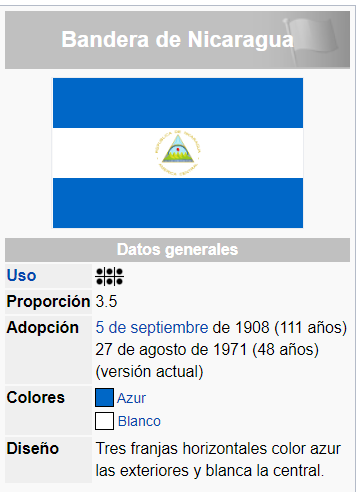
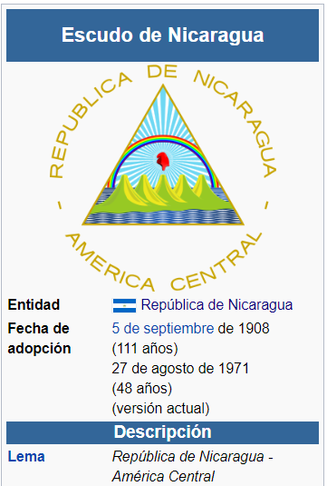
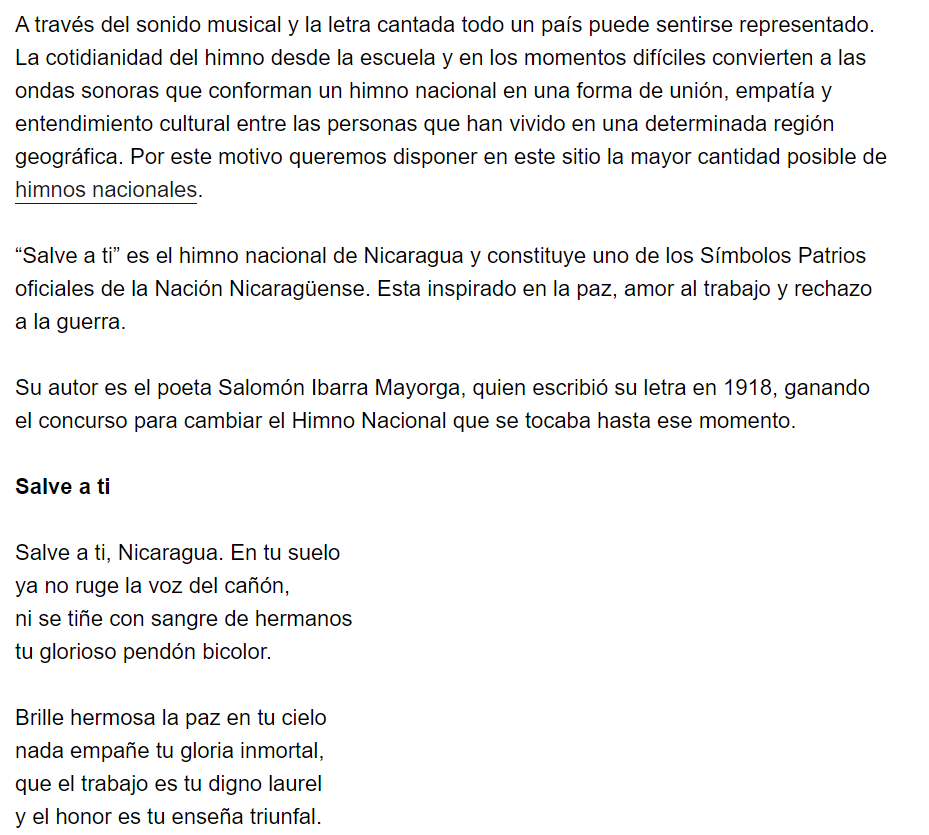

Simbolos Patrios
Bandera
La bandera de Nicaragua fue creada por Decreto Legislativo el 5 de septiembre de 1908 pero no se oficializó hasta el 27 de agosto de 1971, al igual que el actual Escudo Nacional, siendo Presidente de la República el General José Santos Zelaya. Su composición es tres franjas horizontales del mismo tamaño, de tono azur entre claro y mediano, las exteriores y de color blanco la central, en cuyo centro, figura el Escudo Nacional. Está basada en la que perteneció a las Provincias Unidas del Centro de América, la cual a su vez se basaba en la bandera de las Provincias Unidas del Río de la Plata, actual Argentina. Las franjas azules simbolizan la justicia, la lealtad, la fraternidad, la fortaleza, el valor, el cielo, el color de los lagos Xolotlán y Cocibolca, el Mar Caribe y el Océano Pacífico que bañan las costas del este y el oeste del país, respectivamente.1
La franja blanca simboliza la pureza, la integridad, la igualdad, la bondad, la paz y la nación.2 El Día de la Bandera se celebra el 14 de julio de cada año desde 1971, instituido por el artículo 35 de la Ley No. 1908 Ley sobre características y uso de los Símbolos Patrios, pues en dicha fecha en 1970 se abolió el Tratado Chamorro-Bryan (firmado en 1914 entre Nicaragua y Estados Unidos) que lesionaba la soberanía nacional.3
Escudo
El Escudo de Nicaragua fue creado, junto con la actual Bandera de Nicaragua, mediante el Decreto Legislativo del 5 de septiembre de 1908, siendo Presidente de La República José Santos Zelaya, fijándose de modo definitivo el Escudo y la Bandera de Nicaragua actuales. Se basa en el Escudo que perteneció a las Provincias Unidas del Centro de América.

Himno
Historia
Época precolombina y preconquista
En la costa del mar Caribe nicaragüense, en la zona llamada Monkey Point se localiza el "conchero" (cúmulo de valvas) conocido como "Angie", donde se encuentran los vestigios de presencia humana, más antiguos conocidos, datados en 8 mil años.
Se sabe de asentamientos indígenas en la región de la costa del Océano Pacífico nicaragüense que datan del 6000 a. C. El yacimiento de Acahualinca (entre el 232 y el 8 a. C.) es posterior, asimismo se conocen otras evidencias arqueológicas, principalmente artículos de cerámica y estatuarios de piedra volcánica, como los hallados en la isla de Zapatera.
Colonización española
El 21 de abril de 1524, en el actual territorio de Nicaragua, fue fundada la ciudad de Granada y el 19 de junio de 1524 la ciudad de León. Ambas fueron fundadas por Francisco Hernández de Córdoba, enviado por Pedro Arias de Ávila, entonces gobernador de Castilla de Oro, en el actual territorio de Panamá. En 1528, la Corona española erigió la Provincia de Nicaragua, y se solicitó establecer si el territorio de la villa de Bruselas (actualmente en territorio de Costa Rica), pertenecía a la Provincia de Nicaragua (la nueva circunscripción), o si permanecía bajo la autoridad de Castilla del Oro.
Una Real Cédula del 21 de abril de 1529 resolvió el conflicto a favor de la Provincia de Nicaragua, cuando ya la villa de Bruselas había dejado de existir. Posteriormente la Provincia de Nicaragua pasó a depender de la Audiencia de Panamá hasta 1543 que pasa a depender de la Audiencia de Guatemala.
En 1554, con la conquista del Reino de Nicoya se crea la Alcaldía Mayor o Corregimiento de la provincia de Nicoya, puertos de Chira y Paro. La Intendencia de León fue creada por Real Cédula del 23 de diciembre de 1786, con la unión de la Alcaldía Mayor de Nicoya y la Gobernación de Nicaragua. Formando parte de la Capitanía General de Guatemala, dependiente del Virreinato de la Nueva España.
En enero de 1561, Juan de Cavallón recorrió Nicoya y entró en el Valle Central, donde fundó Castillo de Garcimuñoz, la primera población del Valle Central. A Juan de Cavallón se le considera como el primer conquistador de Costa Rica,52 si bien no pudo ejercer un control absoluto de la población indígena y se vio envuelto en una lucha contra el cacique Garabito, rey de los huetares, para poder adquirir víveres. El reino de Garabito se extendía desde el río Virilla hasta las costas del Pacífico (Jacó y Tilarán) y desde la cordillera Volcánica Central hasta el río San Juan, y su influencia en el país era enorme, aun entre sus enemigos los chorotegas, que controlaban Nicoya. Garabito, símbolo de la resistencia huetar, no se enfrentó abiertamente a los españoles, sino que usó tácticas de guerrilla, con emboscadas e incursiones rápidas en los campamentos y las poblaciones españolas.53
Colonización británica
A mediados del siglo XVI, se desarrolló en el noreste de la actual Honduras la nación de los zambos mosquitos, surgida de la mezcla entre los indígenas que la habitaban y los esclavos sobrevivientes del naufragio de un barco negrero que se hundió en el litoral. Los británicos establecieron amistosas relaciones con ellos y surgió así la reserva Misquita o «Mosquitia», una especie de Protectorado británico que duró hasta fines de siglo XIX.
En 1630, se estableció el primer contacto comercial entre los británicos y los misquitos en la zona del cabo Gracias a Dios Entre ellos estaba el pirata neerlandés Abraham Blauvelt quien se estableció en la bahía de Bluefields llamada así en honor a él. Poco a poco los ingleses se asentaron en la región, hasta que el 16 de abril de 1740 los misquitos, amparados por la protección de Gran Bretaña, ceden sus territorios, estableciendo el dominio colonial británico.
En 1774, Bluefields se convirtió en la capital de la Mosquitia, donde los británicos instalaron a un rey mosco para consolidar su dominio. Los británicos se retiraron en 1787 pero la Mosquitia siguió siendo gobernada por los reyes moscos, fieles a la corona británica.